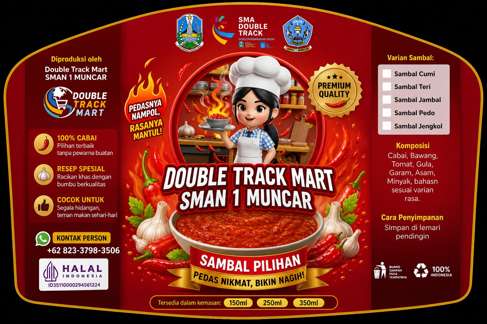
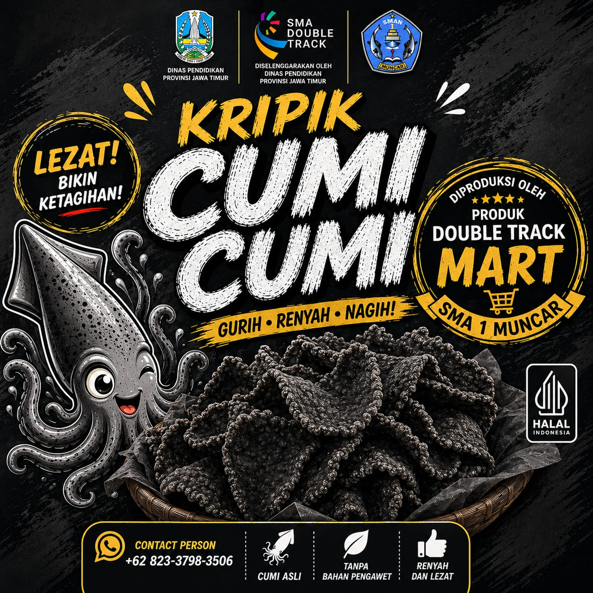
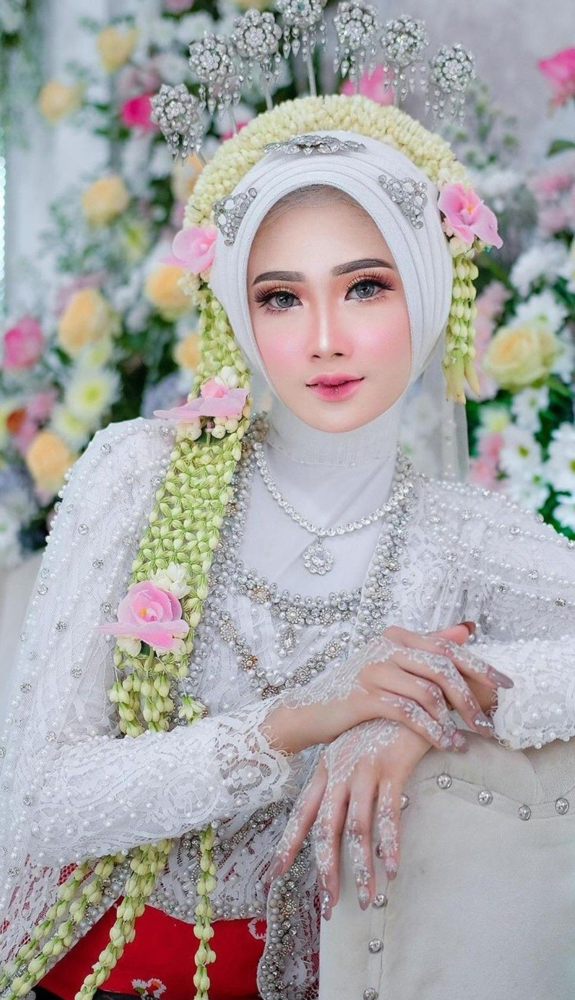
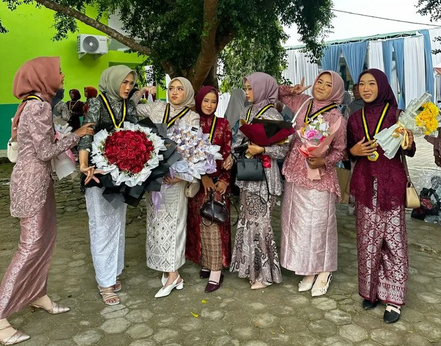
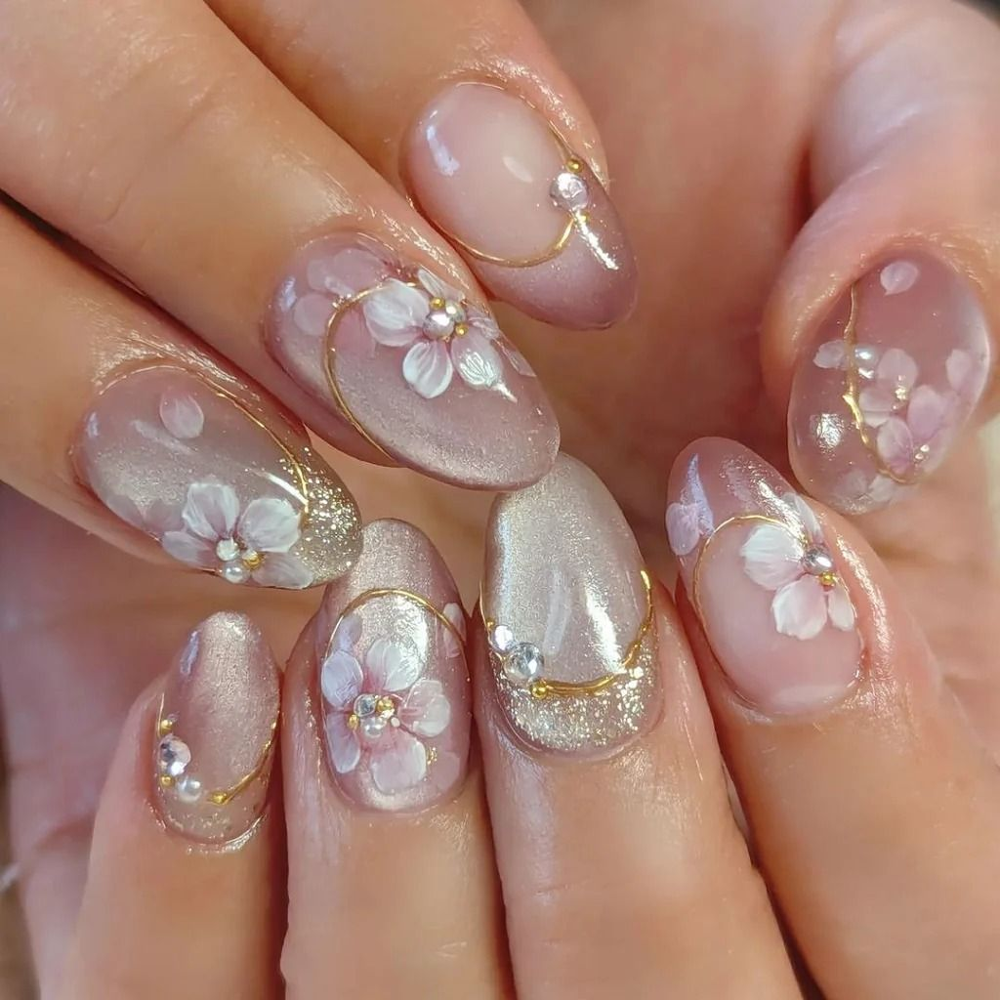

Katalog Produk & Jasa Kreatif
Bentuk dukungan nyata bagi hasil karya produk dan jasa siswa Double Track SMAN 1 Muncar.
 Tata Boga
Tata Boga
Paket Kue Tradisional Tampah
Siswa Tata Boga SMAN 1 Muncar
Varian Gurih: Lemper ayam, risoles mayo, dan arem-arem yang dikemas mika individu agar tetap steril dan praktis.Varian Manis: Kue ku, klepon, dan kue lapis berbahan alami khas Nusantara dengan cita rasa autentik.

Tata BogaAneka Sambal Khas Muncar
Tim Kuliner Siswa SMAN 1 Muncar
Olahan sambal rumahan pedas gurih nagih dengan bumbu rempah pilihan dan paduan hasil laut segar khas pesisir Muncar. Higienis dan siap santap!

Tata BogaInovasi Olahan Ikan Muncar
Siswa Tata Boga SMAN 1 Muncar
Kemasan Kripik Cumi khas pesisir Muncar dan olahan laut.

Tata RiasRias Pengantin Hijab Flawless
Tim MUA Siswa SMAN 1 Muncar
Layanan rias wajah pengantin hijab modern dengan produk halal berkategori premium & tahan lama.

Tata RiasJasa Rias Wisuda & Hijab Event
Tim MUA Siswa SMAN 1 Muncar
Make-up natural cantik dan kreasi hijab pashmina/segiempat untuk acara perpisahan, wisuda, & pesta.

Tata RiasJasa Nail Art & Nail Care
Tim MUA Siswa SMAN 1 Muncar
Kreasi hias kuku aesthetic mulai dari simple nude, glitter, hingga custom art sesuai selera untuk tampilan jemari yang lebih anggun dan menawan.